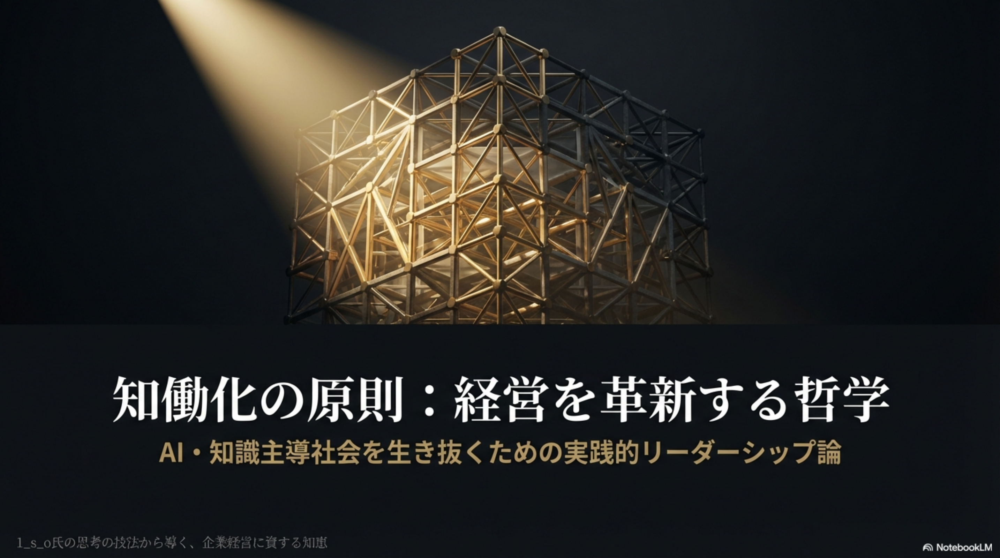

♥ 18
001
思考の技法
難しいことを難しいままに書く
知識や思想を平易に「わかりやすく」するだけでは本質が失われることを論じる。難解さを保ちながら正確に伝えることの重要性を問う。読者への過度な迎合を戒め、思考の深度を大切にする姿勢を示す。
note.comで読む ↗SHIGERU OTSUKI / NOTE MESSAGES
大槻繁（1_s_o）がnote.comに発表してきた124本の論考。
知働化・ソフトウェア工学・組織論・哲学にまたがるメッセージを、
このサイトでわかりやすく紹介します。
このサイトは、大槻繁（1_s_o / 大槻）が note.com に発表してきた論考・エッセイのメッセージを、より広く、より分かりやすく届けることを目的としています。
大槻繁は、「知働化」（ちどうか）という概念を中心に、ソフトウェア工学・組織論・哲学・AI時代の人間の役割など、 幅広いテーマについて深く考察してきました。その思想の核心は、 「体を動かす人働きから、 知識・思考を働かせる知働きへ」という 時代的パラダイムシフトの認識にあります。
note.comでの連載は2025年5月から開始され、現在までに124本の作品を公開しています。 本サイトでは、その記事インデックス・主要な格言と原則・デザインされた資料を ご覧・ご利用いただけます。
note.com/ichi_s_otsuki で全記事を読む全124本の記事を収録したインデックスPDFをご利用いただけます。 以下では注目記事を抜粋して紹介しています。
知識や思想を平易に「わかりやすく」するだけでは本質が失われることを論じる。難解さを保ちながら正確に伝えることの重要性を問う。読者への過度な迎合を戒め、思考の深度を大切にする姿勢を示す。
note.comで読む ↗
124本の記事群から抽出した20の格言・原則です。
知働化・思考の技法・組織論・哲学にわたる知恵をまとめました。
全文（各原則のメッセージ・解説・参照元URL付き）はPDFでご覧いただけます。

▲ クリックで表示・ダウンロード
note記事の思想をビジュアルデザインとして表現した資料です。 「知働化経営」とは、知識・思考・創造性を経営の中心に据えるマネジメント哲学であり、 AI時代における組織と人間の新しい関係性を提示します。
本資料では、知働化経営の核心的な考え方を、図解・格言・ビジュアルを用いて 分かりやすくまとめています。経営者・マネージャー・エンジニアなど、 幅広い読者に向けて設計されています。
サムネイル画像をクリック、またはボタンからPDFを直接ダウンロードしてご利用ください。
知働化経営・思考の技法・ソフトウェア工学に関するご質問、
講演・執筆・コンサルティングのご依頼は、
株式会社一（いち）のお問い合わせフォームよりお気軽にどうぞ。
1corp.biz/primary2026/contact.html